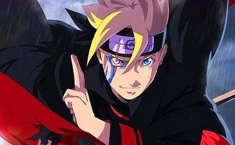

漩涡博人
博人出身火之国·木叶隐村，是七代目火影漩涡鸣人和漩涡雏田（婚前姓日向）的长子，漩涡向日葵的哥哥。晋升为下忍后，与宇智波佐良娜、巳月同属猿飞木叶丸带领的第七班。博人有着破天荒的性格以及经常逃课等不认真的一面，但实际上颇有天才风范，并且有着比任何人都关心朋友的温柔一面。对于过度繁忙的鸣人感到反感，经常为此发生冲突。
为扔掉“火影儿子”的标签，走出自己的道路，他向宇智波佐助拜师，希望能得到打败鸣人的方法。后经过中忍考试的浩劫，博人终于感受到父亲一直以来的艰辛与不易，并理解、认同了父亲。事件结束后，博人决定要像佐助一样，以与父亲、与火影不同的方式来守护村子。